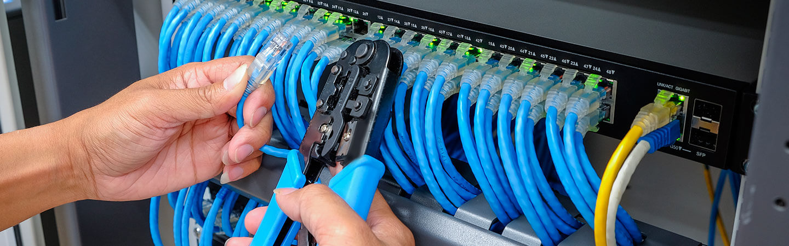
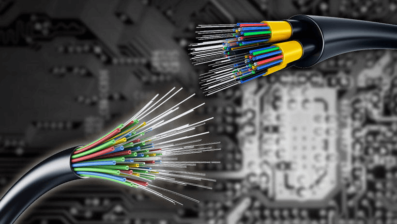
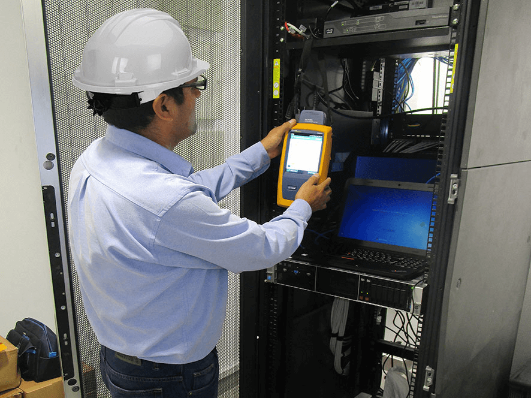

Servicios que brindamos
Cableado Estructurado
Hemos realizado los proyectos más importantes de cableado estructurado en el país, siendo este nuestro servicio por excelencia. Contamos con el mayor personal certificado en Simon Company, AMP Netconnect, 3M y Quest. Instalamos los primeros sistemas 10G en Argentina con categoría 6 y 7. Trabajamos con equipos de certificación de última generación Fluke Network para certificar la calidad de mano de obra y la viabilidad de las garantías (de 15 a 20 años) de fábrica de los sistemas de infraestructura instalados.
Fibra Optica
Contamos con un personal especializado y con una larga experiencia en la rama y el uso de equipos fusionadores y OTDR los cuales permiten que brindemos un servicio de calidad en la instalación de sistemas de fibra óptica monomodo y multimodo, el uso de la tecnología Local Light Injection Detection (LID) aseguran los mejores valores de fusión. Siemon Company, OFS y AMP nos permiten realizar proyectos importantes para la industria del petróleo con garantia y respaldo de nuestra calidad de servicio.
Certificados
La certificación es la medición junto con el tester de red de los diferentes parámetro de los diferentes cableados que hay. Puede ser por fibras o con UTP categorias 5,6,7,8 depende del cableado que pongas con los tester de red que analiza todos los parametros del cableado. Si hay un ruido en la red, distancia, como esta apareado, todas las condiciones para que el cable cumpla con las exigencias que el cliente compro.
Estructuración de Centro de Cómputos
Nosotros realizamos proyectos importantes para empresas de telecomunicaciones, bancos e instituciones del país, creando, reordenando y/o normalizando los sistemas centrales (centros de cómputo( de acuerdo a las normas ISO para la fácil administración de los mismos, logrando con estos proyectos bajar los costos de mantenimiento y evitar que una compañía dependa de una persona para el mantenimiento de sus sistemas de red o telefónicos debido al desorden. El uso de marcas importantes como Quest, Cisco, Allied Telesis, etc., nos han permitido man la calidad de los sistemas instalados tales como gabinetes, racks, accesorios especializados para alta densidad de cables, sistemas de datos de alta velocidad (cobre y fibra), sensores, cámaras, etc.
Sistemas de Telefonía
La integración de servicios al internet, nos ha colocado en una posición estratégica para brindar servicios de sistemas de telefonía IP y voz sobre IP "VoIP", siendo CISCO la principal marca, tiene soluciones adecuadas a la magnitud del cliente y sus necesidades, realizan proyectos a nivel nacional, con un total respaldo de profesionales de las marcas CISCO y LINKSYS, que dan al cliente una garantía sobre su inversión. La empresa cuenta con un servicio de mantenimiento e instalación de sistemas telefonicos Panasonic y Nortel., estructurado las conexiones centrales de estos sistemas para un fácil mantenimiento acorde a nuestro servicio de cableado estructurado y mucho más.
Infraestructura Eléctrica para Sistemas Informáticos
Especialistas en la instalación de sistemas eléctricos para sistemas informáticos, realizando un diseño y ejecución adecuado para la sensibilidad de los equipos electrónicos de una red, considerando los sistemas de aterramiento correctos, barramiento norma AKG (IEEE.S19), tipos de energía de respaldo y normas de canalización, para una buena integración del sistema de networking y el sistema eléctrico.
Transmisión de datos por Sistemas Eléctricos
Debido al crecimiento constante de una empresa, se requiere la ampliación de puntos de datos en lugares de difícil acceso para la canalización de punto y/o la llegada de una señal inalámbrica, para estos casos contamos con soluciones para transmisión de datos a través del sistema eléctrico con la calidad y el prestigio de las marcas que respaldan su servicio.
Sistemas inalámbricos de Comunicación Wireless
Diseño e instalación de sistemas inalámbricos con tecnología PRE-WIMAX y WI MAX probados para aplicaciones críticas y diseñados para ambientes extremos. Coberturas con línea de vista hasta 60 km y 100 mbps probados en Argentina. Capacidad de transmitir cualquier tipo de señal aplicación y/o información.